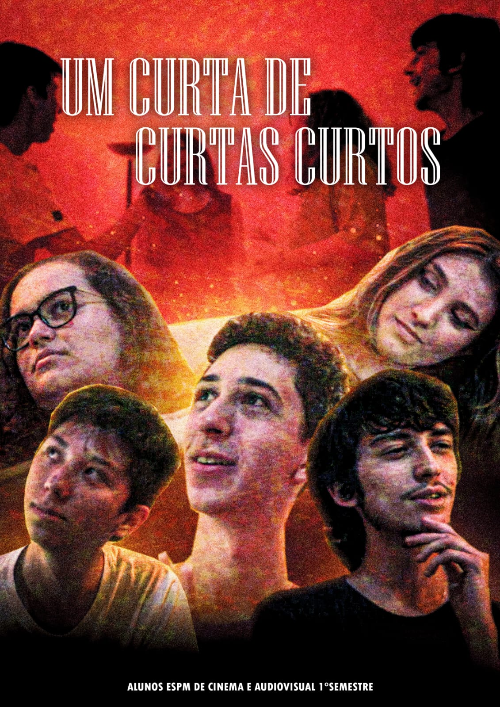

Experiências Criativas:
- Roteirista de Real Life, Um Curta de Curtas Curtos e (des)conectados;
- Realizei diversos trabalhos na área de Comunicação Visual, como meu Trabalho de Conclusão de Curso
- Criador, Escritor e Ilustrador de Museu Macabro;
- Diretor Criativo de Fundação PCE RPG;
- Escritor e Criador de Wodir
Outras Criações:
Narrador de RPG de Mesa:
- Masmorras Inconstantes (no sistema D&D)
- Enigma do Paralelo (no sistema Ordem Paranormal)
- Culto do Subterrâneo (no sistema Ordem Paranormal)
